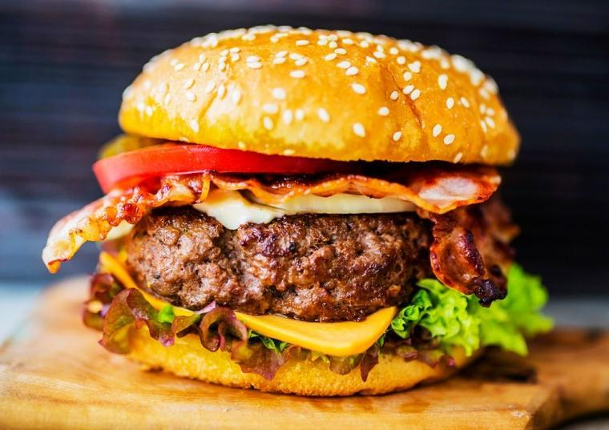

<!--
  Generated template for the RefeicaoPage page.

  See http://ionicframework.com/docs/components/#navigation for more info on
  Ionic pages and navigation.
-->
<ion-header>
  <ion-navbar>
    <button ion-button menuToggle>
      <ion-icon name="menu"></ion-icon>
    </button>
    <ion-title>convites</ion-title>
  </ion-navbar>
</ion-header>

<ion-content padding>

  <ion-list>
    <button ion-item *ngFor="let item of items">
      <ion-thumbnail item-start>
        
      </ion-thumbnail>
      <h2>{{ item.nome }}</h2>
      <h3>{{ item.endereco }}</h3>
      <h3>R$ {{ item.valor }}</h3>
      <p>{{ item.descricao }}</p>
    </button>
  </ion-list>

</ion-content>
